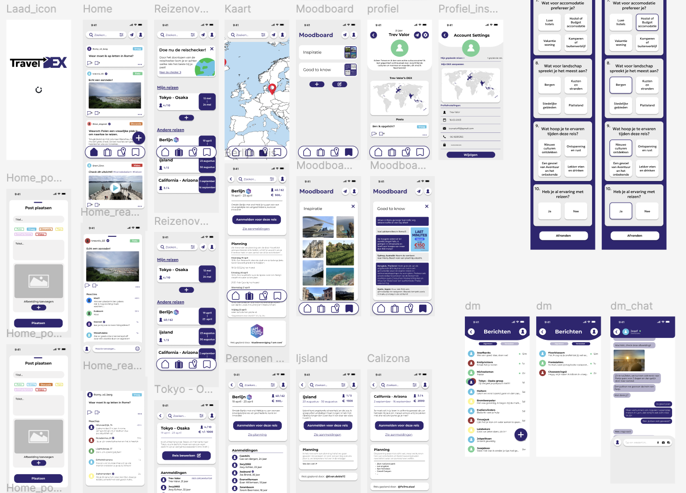

TravelDEX, de Hi-Fi schermen
TravelDEX is een intuïtief en sociaal platform voor reizigers, waar je ervaringen kunt delen, vragen kunt stellen en georganiseerde reizen kunt maken of bijwonen.
De app is ontworpen met een duidelijke focus op gebruiksgemak en verbinding tussen reizigers.
De interface bestaat uit drie hoofdonderdelen: de tijdlijn (posts en reacties), het reisoverzicht (waar je zelf reizen organiseert of aan kunt deelnemen).
Weet je nog niet wat voor reis bij jou past? Doe dan de reischecker en kom er achter!
Ook wordt er gebruik gemaakt van persoonlijke profielen inclusief een wereldkaart, waarop bezochte landen worden weergegeven. Daarnaast kun je ook je favoriete posts opslaan en verzamelen op je moodboard en met andere gebruikers chatten over je reiservaringen.

Het ontwerpproces begon met papieren schetsen, die zijn vertaald naar mid-fidelity wireframes in Figma.
Na feedback en tests is dit uitgewerkt tot een high-fidelity prototype waarin stijl, interactie en inhoud samenkomen.
Deze schermen vormen de basis voor een toegankelijke en visueel aantrekkelijke app. Het volledige proces is gebundeld in een PDF waarin je alle stappen van idee tot eindontwerp terugvindt.